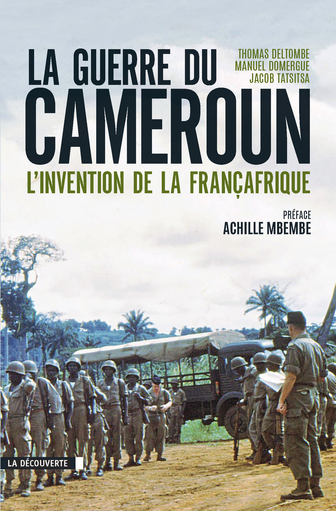

La guerre du Cameroun
Informations
Soutenez les auteurs en achetant ce livre : en version papier (12€) ou version numérique (10€) sur le site des Editions de la découverte.

A propos de ce site : Le livre est diffusé ici en version web, dans l’objectif de mieux diffuser l’Histoire méconnue de la Guerre du Cameroun.
Ressources utiles :
- Interview de Manuel Domergue pour le JT6H de TV5Monde, en 2011
- Autre interview de Manuel Domergue pour Alqarra TV, en 2013
- Page Facebook du livre Kamerun